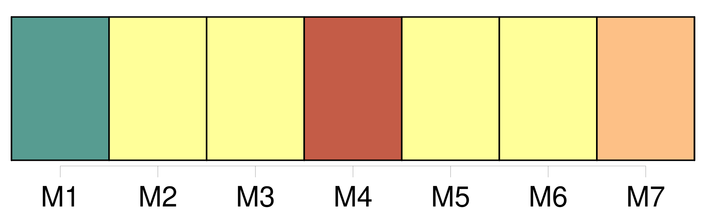
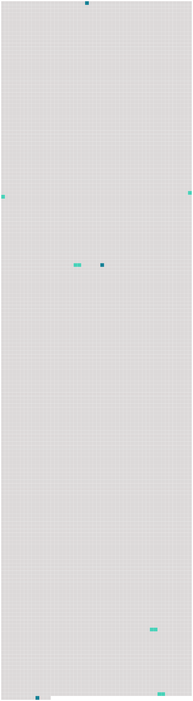

Longueur nb maillons : 7 mentions |
 |
Inexpériente de l’ amour et docile au discours, une jeune fille peut se laisser séduire ; mais pour ces sortes de [femmes] , un homme doit savoir, comme monsieur de Jaucourt, ne pas crier quand, en se cachant au fond d’ un cabinet, la femme de chambre lui brise deux doigts dans la jointure d’ une porte. [101 phrases] Elle était sous le charme de cette craintive curiosité qui pousse [les femmes] à se procurer des émotions dangereuses, à voir des tigres enchaînés, à regarder des boas, en s’ effrayant de n’ en être séparées que par de faibles barrières. [30 phrases] Elle porta la main sur le phénomène avec cette hardiesse que [les femmes] puisent dans la violence de [leurs] désirs ; mais une sueur froide sortit de ses pores, car aussitôt qu’ elle eut touché le vieillard, elle entendit un cri semblable à celui d’ une crécelle. [214 phrases] Elle jeta sur Sarrasine un des coups d’ œil éloquents qui disent souvent beaucoup plus de choses que [les femmes] ne le veulent. [41 phrases] comme son cœur battit quand il aperçut un pied mignon, chaussé de ces mules qui, permettez -moi de le dire, madame, donnaient jadis au pied [des femmes] une expression si coquette, si voluptueuse, que je ne sais pas comment les hommes [y] pouvaient résister. |
 |
Il est possible de télécharger la ressource sur la page Ortolang |
Si vous avez des questions ou vous voyez des erreurs, merci d'envoyer un mail à silvia.federzoni89@gmail.com |